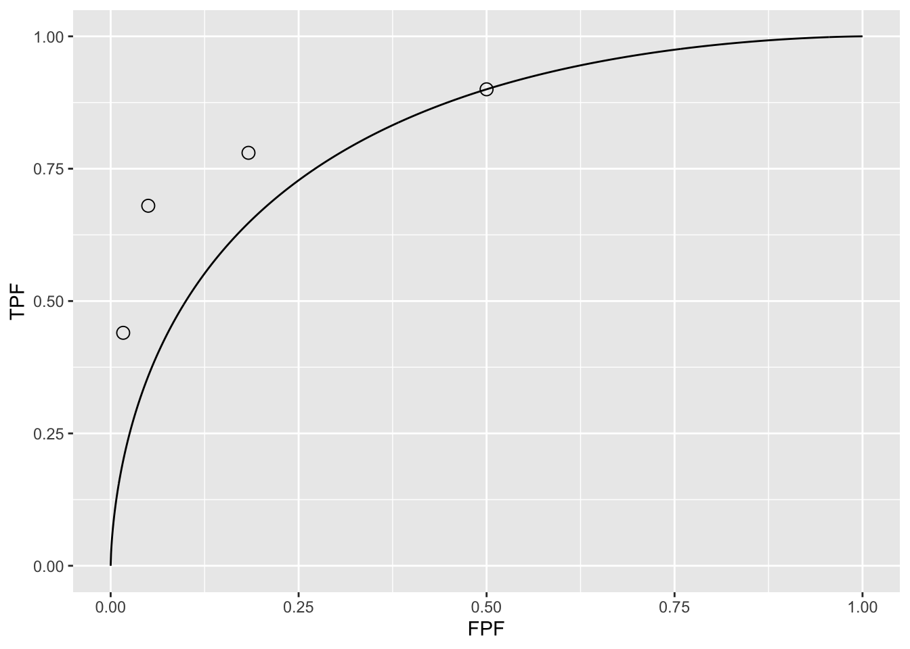
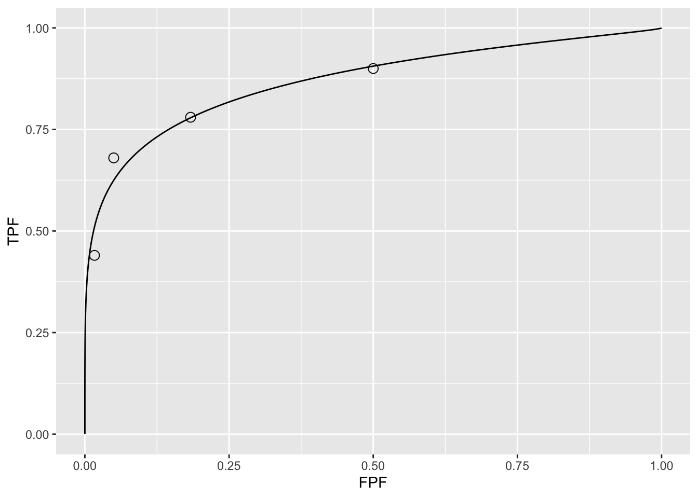

Chapter 4 Ratings Paradigm
4.1 Introduction
In Chapter 02 the binary task and associated concepts of sensitivity, specificity, true positive fraction, false positive fraction, positive and negative predictive values were introduced. Chapter 03 introduced the concepts of a random scalar decision variable, or z-sample for each case, which is compared, by the observer, to a fixed reporting threshold \(\zeta\), resulting in two types of decisions, “case is non-diseased” or “case is diseased” depending on whether the realized z-sample is less than, or greater than or equal to the reporting threshold. It described a statistical model, for the binary task, characterized by two unit-variance normal distributions separated by \(\mu\). The concept of an underlying receiver operating characteristic (ROC) curve with the reporting threshold defining an operating point on the curve was introduced and the advisability of using the area under the curve as a measure of performance, which is independent of reporting threshold, was stressed.
In this chapter the more commonly used ratings method will be described, which yields greater definition to the underlying ROC curve than just one operating point obtained in the binary task, and moreover, is more efficient. In this method, the observer assigns a rating to each case. Described first is a typical ROC counts table and how operating points (i.e., pairs of FPF and TPF values) are calculated from the counts data. A labeling convention for the operating points is introduced. Notation is introduced for the observed integers in the counts table and the rules for calculating operating points are expressed as formulae and implemented in R. The ratings method is contrasted to the binary method, in terms of efficiency and practicality. A theme occurring repeatedly in this book, that the ratings are not numerical values but rather they are ordered labels is illustrated with an example.
4.2 The ROC counts table
In a positive-directed rating scale with five discrete levels, the ratings could be the ordered labels “1”: definitely non-diseased, “2”: probably non-diseased, “3”: could be non-diseased or diseased, “4”: probably diseased, “5”: definitely diseased. At the conclusion of the ROC study an ROC counts table is constructed. This is the generalization to rating studies of the 2 x 2 decision vs. truth table introduced in Chapter 02, Table 2.1. This type of data representation is sometimes called a frequency table, but frequency means a rate of number of events per some unit, so the author prefers the clearer term “counts”.
The Table (below) is a representative counts table for a 5-rating study that summarizes the collected data. It is the starting point for analysis. It lists the number of counts in each ratings bin, listed separately for non-diseased and diseased cases, respectively. The data is from an actual clinical study.
| 1 | 2 | 3 | 4 | 5 | |
|---|---|---|---|---|---|
| non-diseased | 30 | 19 | 8 | 2 | 1 |
| diseased | 5 | 6 | 5 | 12 | 22 |
In this example, there are \(K_1 = 60\) non-diseased cases and \(K_2 = 50\) diseased cases. Of the 60 non-diseased cases 30 were assigned the “1” rating, 19 were assigned the “2” rating, eight the “3” rating, two the “4” rating and one received the “5” rating. The distribution of counts is tilted towards the “1” rating end, but there is some spread and one actually non-diseased case appeared definitely diseased to the observer. In contrast, the distribution of the diseased cases is tilted towards the “5” rating end. Of the 50 diseased cases, 22 received the “5” rating, 12 the “4” rating, five the “3” rating, six the “2” rating and five the “1” rating. The spread appears to be more pronounced for the diseased cases, e.g., five of the 50 cases appeared to be definitely non-diseased to the observer. A little thought should convince you that the observed tilting of the counts, towards the “1” end for actually non-diseased cases, and towards the “5” end for actually diseased cases, is reasonable. However, one should be forewarned not to jump to conclusions about the spread of the data being larger for diseased than for non-diseased cases. While it turns out to be true, the ratings are merely ordered labels, and modeling is required, to be described in Chapter 06, that uses only the ordering information implicit in the labels, not the actual values, to reach quantitative conclusions.
4.3 Operating points from counts table
RtngGE5 means “rating greater than or equal to 5”, etc.
RtngGE5
RtngGE4
RtngGE3
RtngGE2
RtngGE1
FPF
0.017
0.05
0.183
0.5
1
TPF
0.440
0.68
0.780
0.9
1
It is critical to understand the following example. The table illustrates how ROC operating points are calculated from the cell counts. One starts with non-diseased cases that were rated five or more (in this example, since 5 is the highest allowed rating, the “or more” clause is superfluous) and divides by the total number of non-diseased cases, \(K_1 = 60\). This yields the abscissa of the lowest non-trivial operating point, namely \(FPF_{\ge5}\) = 1/60 = 0.017. The subscript on FPF is intended to make explicit which ratings are being cumulated. The corresponding ordinate is obtained by dividing the number of diseased cases rated “5” or more and dividing by the total number of diseased cases, \(K_2 = 50\), yielding \(TPF_{\ge5}\) = 22/50 = 0.440. Therefore, the coordinates of the lowest operating point are (0.017, 0.44). The abscissa of the next higher operating point is obtained by dividing the number of non-diseased cases that were rated “4” or more and dividing by the total number of non-diseased cases, i.e., \(TPF_{\ge4}\) = 3/60 = 0.05. Similarly the ordinate of this operating point is obtained by dividing the number of diseased cases that were rated “4” or more and dividing by the total number of diseased cases, i.e., \(FPF_{\ge4}\) = 34/50 = 0.680. The procedure, which at each stage cumulates the number of cases equal to or greater (in the sense of increased confidence level for disease presence) than a specified label, is repeated to yield the rest of the operating points listed in Table 4.1. Since they are computed directly from the data, without any assumption, they are called empirical or observed operating points. After done this once it would be nice to have a formula implementing the process, one use of which would be to code the procedure. First, one needs appropriate notation for the bin counts.
Let \(K_{1r}\) denote the number of non-diseased cases rated r, and \(K_{2r}\) denote the number of diseased cases rated r. For convenience, define dummy counts \(K_{1{(R+1)}}\) = \(K_{2{(R+1)}}\) = 0, where R is the number of ROC bins. This construct allows inclusion of the origin (0,0) in the formulae. The range of r is \(r = 1,2,...,(R+1)\). Within each truth-state, the individual bin counts sum to the total number of non-diseased and diseased cases, respectively. The following equations summarize all this:
\[\begin{equation*} K_1=\sum_{r=1}^{R+1}K_{1r} \end{equation*}\]
\[\begin{equation*} K_2=\sum_{r=1}^{R+1}K_{2r} \end{equation*}\]
\[\begin{equation*} K_{1{(R+1)}} = K_{2{(R+1)}} = 0 \end{equation*}\]
\[\begin{equation*} r = 1,2,...,(R+1) \end{equation*}\]
The operating points are defined by:
\[\begin{equation*} FPF_r=\frac {1} {K_1} \sum_{s=r}^{R+1}K_{1s} \end{equation*}\]
\[\begin{equation*} TPF_r=\frac {1} {K_2} \sum_{s=r}^{R+1}K_{2s} \end{equation*}\]
The labeling of the points follows the following convention: \(r=1\) corresponds to the upper right corner (1,1) of the ROC plot, a trivial operating point since it is common to all datasets. Next, \(r=2\) is the next lower operating point, etc., and \(r=R\) is the lowest non-trivial operating point and finally \(r=R+1\) is the origin (0,0) of the ROC plot, which is also a trivial operating point, because it is common to all datasets. In other words, the operating points are numbered starting with the upper right corner, labeled 1, and working down the curve, each time increasing the label by one.
Since one is cumulating counts, which can never be negative, the highest non-trivial operating point resulting from cumulating the 2 through 5 ratings has to be to the upper-right of the next adjacent operating point resulting from cumulating the 3 through 5 ratings. This in turn has to be to the upper-right of the operating point resulting from cumulating the 4 through 5 ratings. This in turn has to be to the upper right of the operating point resulting from the 5 ratings. In other words, as one cumulates ratings bins, the operating point must move monotonically up and to the right, or more accurately, the point cannot move down or to the left. If a particular bin has zero counts for non-diseased cases, and non-zero counts for diseased cases, the operating point moves vertically up when this bin is cumulated; if it has zero counts for diseased cases, and non-zero counts for non-diseased cases, the operating point moves horizontally to the right when this bin is cumulated.
4.4 Automating all this
It is useful to replace the preceding detailed explanation with a simple algorithm that incorporates all the logic. This is done in the following code:
options(digits = 3)
FPF <- array(0,dim = R)
TPF <- array(0,dim = R)
for (r in (R+1):2) {
FPF[(R+2)-r] <- sum(Ktr[1, r:(R+1)])/sum(Ktr[1,])
TPF[(R+2)-r] <- sum(Ktr[2, r:(R+1)])/sum(Ktr[2,])
}
cat("FPF =", "\n")
#> FPF =
cat(FPF, "\n")
#> 0.0167 0.05 0.183 0.5
cat("TPF = ", "\n")
#> TPF =
cat(TPF, "\n")
#> 0.44 0.68 0.78 0.9
mu <- qnorm(.5)+qnorm(.9);sigma <- 1
Az <- pnorm(mu/sqrt(2))
cat("uppermost point based estimate of mu = ", mu, "\n")
#> uppermost point based estimate of mu = 1.28
cat("corresponding estimate of Az = ", Az, "\n")
#> corresponding estimate of Az = 0.818
cat("showing observed operating points and equal variance model fitted ROC curve", "\n")
#> showing observed operating points and equal variance model fitted ROC curve
plotROC (mu, sigma, FPF, TPF)
Notice that the values of the arrays
FPFandTPFare identical to those listed in Table 4.1.It was shown in Chapter 03 that in the equal variance binormal model, an operating point determines the parameters \(\mu\) = 1.282, Eqn. (3.21), or equivalently \(A_{z;\sigma = 1}\) = 0.818, Eqn. (3.30). The last three lines of the preceding code chunk illustrate the application of these formulae using the coordinates (0.5, 0.9) of the uppermost non-trivial operating point, followed by a plot of the ROC curve and the operating points.
It should come as no surprise that the uppermost operating point is exactly on the predicted curve: after all, this point was used to calculate \(\mu\) = 1.282.
The corresponding value of \(\zeta\) can be calculated from Eqn. (3.17), namely:
\[\begin{equation*} \Phi^{-1}\left ( Sp \right )=\zeta \end{equation*}\]
\[\begin{equation*} \zeta=\mu - \Phi^{-1}\left ( Se \right ) \end{equation*}\]
These are coded below:
- Either way, one gets the same result: \(\zeta\) = 0. It should be clear that this makes sense: FPF = 0.5 is consistent with half of the (symmetrical) unit-normal non-diseased distribution being above \(\zeta\) = 0. The transformed value \(\zeta\) (zero in this example) is a genuine numerical value. To reiterate, ratings cannot be treated as genuine numerical values, but thresholds, estimated from an appropriate model, can be treated as genuine numerical values.
- Exercise: calculate \(\zeta\) for each of the remaining operating points. Notice that \(\zeta\) increases as one moves down the curve.
mu <- 2.17;sigma <- 1.65
Az <- pnorm(mu/sqrt(1+sigma^2))
plotROC (mu, sigma, FPF, TPF)
cat("binormal unequal variance model estimate of Az = ", Az, "\n")
#> binormal unequal variance model estimate of Az = 0.87
cat("showing observed operating points and unequal variance model fitted ROC curve", "\n")
#> showing observed operating points and unequal variance model fitted ROC curve
The ROC curve in Fig. 4.1 (A), as determined by the uppermost operating point, passes exactly through this point but misses the others. If a different operating point were used to estimate \(\mu\) = and \(A_{z;\sigma = 1}\), the estimated values would have been different and the new curve would pass exactly through the new selected point. No single-point based choice of \(\mu\) would yield a satisfactory visual fit to all the observed operating points. [The reader should confirm these statements with appropriate modifications to the code.] * This is the reason one needs a modified model, with an extra parameter, namely the unequal variance binormal model, to fit radiologist data (the extra parameter is the ratio of the standard deviations of the two distributions).
Fig. 4.1 (B) shows the predicted ROC curve by the unequal variance binormal model, to be introduced in Chapter 06. The corresponding parameter values are \(\mu\) = 2.17and \(\sigma\) = 1.65.
Notice the improved visual quality of the fit. Each observed point is “not engraved in stone”, rather both FPF and TPF are subject to sampling variability. Estimation of confidence intervals for FPF and TPF was addressed in §3.10. [A detail: the estimated confidence interval in the preceding chapter was for a single operating point; since the multiple operating points are correlated – some of the counts used to calculate them are common to two or more operating points – the method tends to overestimate the confidence interval. A modeling approach is possible to estimate confidence intervals that accounts for data correlation and this yields tighter confidence intervals.]
4.5 Relation between ratings paradigm and the binary paradigm
In Chapter 02 it was shown that the binary task requires a single fixed threshold parameter \(\zeta\) and a decision rule, namely, to give the case a diseased rating of 2 if \(Z \ge \zeta\) and a rating of 1 otherwise.
The R-rating task can be viewed as \((R-1)\) simultaneously conducted binary tasks each with its own fixed threshold \(\zeta_r, r = 1, 2, ..., R-1\). It is efficient compared to \((R-1)\) sequentially conducted binary tasks; however, the onus is on the observer to maintain fixed-multiple thresholds through the duration of the study.
The rating method is a more efficient way of collecting the data compared to running the study repeatedly with appropriate instructions to cause the observer to adopt different fixed thresholds specific to each replication. In the clinical context such repeated studies would be impractical because it would introduce memory effects, wherein the diagnosis of a case would depend on how many times the case had been seen, along with other cases, in previous sessions. A second reason is that it is difficult for a radiologist to change the operating threshold in response to instructions. To the author’s knowledge, repeated use of the binary paradigm has not been used in any clinical ROC study.
How does one model the binning? For convenience one defines dummy thresholds \(\zeta_0 = - \infty\) and \(\zeta_R = + \infty\), in which case the thresholds satisfy the ordering requirement \(\zeta_{r-1} \le \zeta_r\) , r = 1, 2, …, R. The rating or binning rule is:
\[\begin{equation*} if \left (\zeta_{r-1} \le z \le \zeta_r \right )\Rightarrow \text rating = r \end{equation*}\]
4.6 Ratings are not numerical values
The ratings are to be thought of as ordered labels, not as numeric values. Arithmetic operations that are allowed on numeric values, such as averaging, are not allowed on ratings. One could have relabeled the ratings in Table 4.2 as A, B, C, D and E, where A < B etc. As long as the counts in the body of the table are unaltered, such relabeling would have no effect on the observed operating points and the fitted curve. Of course one cannot average the labels A, B, etc. of different cases. The issue with numeric labels is not fundamentally different. At the root is that the difference in thresholds corresponding to the different operating points are not in relation to the difference between their numeric values. There is a way to estimate the underlying thresholds, if one assumes a specific model, for example the unequal-variance binormal model to be described in Chapter 06. The thresholds so obtained are genuine numeric values and can be averaged. [Not to hold the reader in suspense, the four thresholds corresponding to the data in Table 4.1 are 0.007676989, 0.8962713, 1.515645 and 2.396711; see §6.4.1; these values would be unchanged if, for example, the labels were doubled, with allowed values 2, 4, 6, 8 and 10, or any of an infinite number of rearrangements that preserves their ordering.]
The temptation to regard confidence levels / ratings as numeric values can be particularly strong when one uses a large number of bins to collect the data. One could use of quasi-continuous ratings scale, implemented for example, by having a slider-bar user interface for selecting the rating. The slider bar typically extends from 0 to 100, and the rating could be recorded as a floating-point number, e.g., 63.45. Here too one cannot assume that the difference between a zero-rated case and a 10 rated case is a tenth of the difference between a zero-rated case and a 100 rated case. So averaging the ratings is not allowed. Additionally, one cannot assume that different observers use the labels in the same way. One observer’s 4-rating is not equivalent to another observers 4-rating. Working directly with the ratings is a bad idea: valid analytical methods use the rankings of the ratings, not their actual values. The reason for the emphasis is that there are serious misconceptions about ratings. The author is aware of a publication stating, to the effect, that a modality resulted in an increase in average confidence level for diseased cases. Another publication used a specific numerical value of a rating to calculate the operating point for each observer – this assumes all observers use the rating scale in the same way.
4.7 A single “clinical” operating point from ratings data
The reason for the quotes in the title to this section is that a single operating point on a laboratory ROC plot, no matter how obtained, has little relevance to how radiologists operate in the clinic. However, some consider it useful to quote an operating point from an ROC study. For a 5-rating ROC study, Table 4.2, it is not possible to unambiguously calculate the operating point of the observer in the binary task of discriminating between non-diseased and diseased cases. One possibility would be to use the three and above ratings to define the operating point, but one might have chosen two and above. A second possibility is to instruct the radiologist that a four or higher rating, for example, implies the case would be reported “clinically” as diseased. However, the radiologist can only pretend so far that this study, which has no clinical consequences, is somehow a “clinical” study. If a single laboratory study based operating point is desired2, the best strategy , in the author’s opinion, is to obtain the rating via two questions. This method is also illustrated in a book on detection theory, Ref. 3, Table 3.1. The first question is “is the case diseased?” The binary (Yes/No) response to this question allows unambiguous calculation of the operating point, as in Chapter 02. The second question is: “what is your confidence in your previous decision?” and allow three responses, namely Low, Medium and High. The dual-question approach is equivalent to a 6-point rating scale, Fig. 4.2.
- The ordering of the ratings can be understood as follows. The four, five and six ratings are as expected. If the radiologist states the patient is diseased and the confidence level is high that is clearly the highest end of the scale, i.e., six, and the lower confidence levels, five and four, follow, as shown. If, on the other hand, the radiologist states the patient is non-diseased, and the confidence level is high, then that must be the lowest end of the scale, i.e., “1”. The lower confidence levels in a negative decision must be higher than “1”, namely “2” and “3”, as shown. As expected, the low confidence ratings, namely “3” (non-diseased, low confidence) and “4” (diseased, low confidence) are adjacent to each other. With this method of data-collection, there is no confusion as to what rating defines the single desired operating point as this is determined by the binary response to the first question. The 6-point rating scale is also sufficiently fine to not smooth out the ability of the radiologist to maintain distinct different levels. In the author’s experience, using this scale one expects rating noise of about ±½ a rating bin, i.e., the same difficult case, shown on different occasions to the same radiologist (with sufficient time lapse or other intervening cases to minimize memory effects) is expected to elicit a “3” or “4”, with roughly equal probability.
4.8 Observer performance studies as laboratory simulations of clinical tasks
Observer performance paradigms (ROC, FROC, LROC and ROI) should be regarded as experiments conducted in a laboratory (i.e., controlled) setting that are intended to be representative of the actual clinical task. They should not to be confused with performance in a real “live” clinical setting: there is a known “laboratory effect”22-24. For example, in one study radiologists performed better during live clinical interpretations than they did later, on the same cases, in a laboratory ROC study22. This is expected because there is more at stake during live interpretations: e.g., the patient’s health and the radiologist’s reputation, than during laboratory ROC studies. The claimed “laboratory effect” has caused some controversy. A paper25 titled “Screening mammography: test set data can reasonably describe actual clinical reporting” argues against the laboratory effect.
Real clinical interpretations happen every day in radiology departments all over the world. In the laboratory, the radiologist is asked to interpret the images “as if in a clinical setting” and render a “diagnosis”. The laboratory decisions have no clinical consequences, e.g., the radiologist will not be sued for mistakes and their ROC study decisions have no impact on the clinical management of the patients. Usually laboratory ROC studies are conducted on retrospectively acquired images. Patients, whose images were used in an ROC study, have already been imaged in the clinic and decisions have already been made on how to manage them.
There is no guarantee that results of the laboratory study are directly applicable to clinical practice. Indeed there is an assumption that the laboratory study correlates with clinical performance. Strict equality is not required, simply that the performance in the laboratory is related monotonically to actual clinical performance. Monotonicity assures preservation of performance orderings, e.g., a radiologist has greater performance than another does or one modality is superior to another, regardless of how they are measured, in the laboratory or in the clinic. The correlation is taken to be an axiomatic truth by researchers, when in fact it is an assumption. To the extent that the participating radiologist brings his/her full clinical expertise to bear on each laboratory image interpretation, this assumption is likely to be valid.
This section provoked a strong negative response from a collaborator. To paraphrase him, "… my friend, I think it is a pity in this book chapter you argue that these studies are simulations. I mean, the reason people perform these studies is because they believe in the results".
The author also believes in observer performance studies. Otherwise, he would not be writing this book. Distrust of the word “simulation” seems to be peculiar to this field. Simulations are widely used in “hard” sciences, e.g., they are used in astrophysics to determine conditions dating to 10-31 seconds after the big bang. Simulations are not to be taken lightly. Conducting clinical studies is very difficult as there are many factors not under the researcher’s control. Observer performance studies of the type described in this book are the closest that one can come to the “real thing” and the author is a firm believer in them. These studies include key elements of the actual clinical task: the entire imaging system, radiologists (assuming the radiologist take these studies seriously in the sense of bringing their full clinical expertise to bear on each image interpretation) and real clinical images and as such are expected to correlate with real “live” interpretations. Proving this correlation is going to be difficult as there are many factors that complicated real interpretations. It is not clear to the author that proving or disproving this correlation is ever going to be a settled issue.
4.9 Discrete vs. continuous ratings: the Miller study
There is controversy about the merits of discrete vs. continuous ratings26-28. Since the late Prof. Charles E. Metz and the late Dr. Robert F. Wagner have both backed the latter (i.e., continuous or quasi-continuous ratings) new ROC study designs sometimes tend to follow their advice. The author’s recommendation is to follow the 6-point rating scale as outlined in Fig. 4.2. This section provides the background for the recommendation.
A widely cited (22,909 citations at the time of writing) 1954 paper by Miller29 titled “The Magical Number Seven, Plus or Minus Two: Some Limits on Our Capacity for Processing Information” is relevant. It is a readable paper, freely downloadable in several languages (www.musanim.com/miller1956/). In the author’s judgment, this paper has not received the attention it should have in the ROC community, and for this reason portions from it are reproduced below. [George Armitage Miller, February 3, 1920 – July 22, 2012, was one of the founders of the field of cognitive psychology.]
Miller’s first objective was to comment on absolute judgments of unidimensional stimuli. Since all (univariate, i.e., single decision per case) ROC models assume a unidimensional decision variable, Miller’s work is highly relevant. He comments on two papers by Pollack30,31. Pollack asked listeners to identify tones by assigning numerals to them, analogous to a rating task described above. The tones differed in frequency, covering the range 100 to 8000 Hz in equal logarithmic steps. A tone was sounded and the listener responded by giving a numeral (i.e., a rating, with higher values corresponding to higher frequencies). After the listener had made his response, he was told the correct identification of the tone. When only two or three tones were used, the listeners never confused them. With four different tones, confusions were quite rare, but with five or more tones, confusions were frequent. With fourteen different tones, the listeners made many mistakes. Since it is so succinct, the entire content of the first (1952) paper by Pollack is reproduced below:
“In contrast to the extremely acute sensitivity of a human listener to discriminate small differences in the frequency or intensity between two sounds is his relative inability to identify (and name) sounds presented individually. When the frequency of a single tone is varied in equal‐logarithmic steps in the range between 100 cps and 8000 cps (and when the level of the tone is randomly adjusted to reduce loudness cues), the amount of information transferred is about 2.3 bits per stimulus presentation. This is equivalent to perfect identification among only 5 tones. The information transferred, under the conditions of measurement employed, is reasonably invariant under wide variations in stimulus conditions.”
By “information” is meant (essentially) the number of levels, measured in bits (binary digits), thereby making it independent of the unit of measurement: 1 bit corresponds to a binary rating scale, 2 bits to a four-point rating scale and 2.3 bits to 22.3 = 4.9, i.e., about 5 ratings bins. Based on Pollack’s’ original unpublished data, Miller put an upper limit of 2.5 bits (corresponding to about 6 ratings bins) on the amount of information that is transmitted by listeners who make absolute judgments of auditory pitch. A second paper31 by Pollack was related to: (1) the frequency range of tones; (2) the utilization of objective reference tones presented with the unknown tone; and (3) the “dimensionality”—the number of independently varying stimulus aspects. Little additional gain in information transmission was associated with the first factor; a moderate gain was associated with the second; and a relatively substantial gain was associated with the third (we return to the dimensionality issue below).
As an interesting side-note, Miller states:
“Most people are surprised that the number is as small as six. Of course, there is evidence that a musically sophisticated person with absolute pitch can identify accurately any one of 50 or 60 different pitches. Fortunately, I do not have time to discuss these remarkable exceptions. I say it is fortunate because I do not know how to explain their superior performance. So I shall stick to the more pedestrian fact that most of us can identify about one out of only five or six pitches before we begin to get confused.
It is interesting to consider that psychologists have been using seven-point rating scales for a long time, on the intuitive basis that trying to rate into finer categories does not really add much to the usefulness of the ratings. Pollack’s results indicate that, at least for pitches, this intuition is fairly sound.
Next you can ask how reproducible this result is. Does it depend on the spacing of the tones or the various conditions of judgment? Pollack varied these conditions in a number of ways. The range of frequencies can be changed by a factor of about 20 without changing the amount of information transmitted more than a small percentage. Different groupings of the pitches decreased the transmission, but the loss was small. For example, if you can discriminate five high-pitched tones in one series and five low-pitched tones in another series, it is reasonable to expect that you could combine all ten into a single series and still tell them all apart without error. When you try it, however, it does not work. The channel capacity for pitch seems to be about six and that is the best you can do.”
In contrast to the careful experiments conducted in the psychophysical context to elucidate this issue, the author was unable to find a single study of the number of discrete rating levels that an observer can support. Even lacking such a study, a recommendation has been made to acquire data on a quasi-continuous scale27.
There is no question that for multidimensional data, as observed in the second study by Pollack31, the observer can support more than 7 ratings bins. To quote Miller:
“You may have noticed that I have been careful to say that this magical number seven applies to one- dimensional judgments. Everyday experience teaches us that we can identify accurately any one of several hundred faces, any one of several thousand words, any one of several thousand objects, etc. The story certainly would not be complete if we stopped at this point. We must have some understanding of why the one-dimensional variables we judge in the laboratory give results so far out of line with what we do constantly in our behavior outside the laboratory. A possible explanation lies in the number of independently variable attributes of the stimuli that are being judged. Objects, faces, words, and the like differ from one another in many ways, whereas the simple stimuli we have considered thus far differ from one another in only one respect.”
In the medical imaging context, a trivial way to increase the number of ratings would be to color-code the images: red, green and blue; now one can assign a red image rated 3, a green image rated 2, etc., which would be meaningless unless the color encoded relevant diagnostic information. Another ability, quoted in the publication27 advocating continuous ratings is the ability to recognize faces, again a multidimensional categorization task, as noted by Miller. Also quoted as an argument for continuous ratings is the ability of computer aided detection schemes that calculate many features for each perceived lesion and combine them into a single probability of malignancy, which is on a highly precise floating point 0 to 1 scale. Radiologists are not computers. Other arguments for greater number of bins: it cannot hurt and one should acquire the rating data at greater precision than the noise, especially if the radiologist is able to maintain the finer distinctions. The author worries that radiologists who are willing to go along with greater precision are over-anxious to co-operate with the experimentalist. In the author’s experience, expert radiologists will not modify their reading style and one should be suspicious when overzealous radiologists accede to an investigators request to interpret images in a style that does not closely resemble the clinic. Radiologists, especially experts, do not like more than about four ratings. The author has worked with a famous chest radiologist (the late Dr. Robert Fraser) who refused to use more than four ratings.
Another reason given for using continuous ratings is it reduces instances of data degeneracy. Data is sometimes said to be degenerate if the curve-fitting algorithm, the binormal model and the proper binormal model, cannot fit it. This occurs, for example, if there are no interior points on the ROC plot. Modifying radiologist behavior to accommodate the limitations of analytical methods seems to be inherently dubious. One could simply randomly add or subtract half an integer from the observed ratings, thereby making the rating scale more granular and reduce instances of degeneracy (this is actually done in some ROC software to overcome degeneracy issues). Another possibility is to use the empirical (trapezoidal) area under the ROC curve. This quantity can always be calculated; there are no degeneracy problems with it. Actually, fitting methods now exist that are robust to data degeneracy, such as discussed in Chapter 18 and Chapter 20, so this reason for acquiring continuous data no longer applies.
The rating task involves a unidimensional scale and the author sees no way of getting around the basic channel-limitation noted by Miller and for this reason the author recommends a 6 point scale, as in Fig. 4.2.
On the other side of the controversy it has been argued that given a large number of allowed ratings levels the observer essentially bins the data into a much smaller number of bins (e.g., 0, 20, 40, 60, 80, 100) and adds a zero-mean noise term to appear to be “spreading out the ratings” 35. This allows easier curve-fitting with the binormal model. However, if the intent is to get the observer to spread the ratings, so that th binormal model does not fail to fit, a better approach is to use alternate models that are very robust with respect to degneracy of the data. More on thsi later (CBM and RSM).